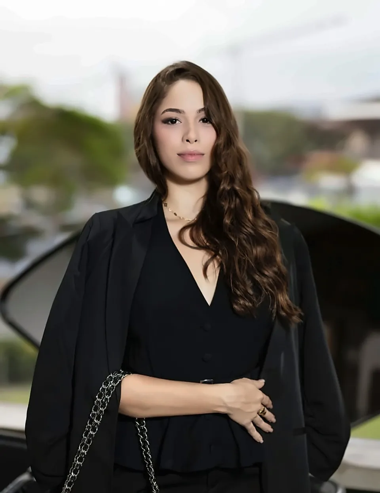

Advogada criminalista na Bahia e no Brasil
Jhulia Monteiro faz a defesa de quem foi preso em flagrante, teve a prisão decretada ou responde a processo criminal. Atende também à noite e aos fins de semana.
OAB/BA nº 83977

Áreas de atuação. Da delegacia ao tribunal.
Encontre a situação mais próxima da sua. Em todas, o primeiro passo é uma mensagem pelo WhatsApp.
- Prisão em flagrante
Acompanhamento na delegacia e na audiência de custódia, com pedido de soltura: liberdade provisória ou, se a prisão foi ilegal, relaxamento.
- Prisão preventiva e temporária
Pedidos para revogar a prisão e habeas corpus, o pedido urgente ao tribunal contra uma prisão ilegal, na Bahia e em outros estados.
- Processo criminal
Defesa em todas as fases, da investigação na delegacia ao julgamento: a resposta à acusação, as audiências, as alegações finais e os recursos.
Quem é preso em flagrante tem o direito de ficar em silêncio, de avisar a família e de ser assistido por advogado, e deve ser levado a uma audiência de custódia em até 24 horas.
Jhulia Monteiro, advogada criminalista
Com base na Bahia, atende casos criminais em todo o Brasil. O primeiro contato é pelo WhatsApp, direto com a advogada.
Inscrita na OAB/BA sob o nº 83977.
Primeiro contato pelo WhatsApp em 3 passos
- 1. Envie uma mensagem
Diga a cidade, o nome da pessoa envolvida e o que aconteceu.
- 2. Converse com a advogada
Ela lê o caso e explica quais são os próximos passos da defesa.
- 3. Combine a contratação
Os honorários são acertados antes de qualquer pedido no processo.